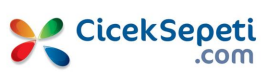
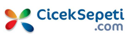

Burak Kanmaz
Software ArchitectWork Experiences


Apart from managing the team, he also took charge of all technical work within the company. He actively managed the company's physical and digital technical assets, coordinated with other teams, and planned for the company's future.
He played a vital role in technical communication with clients and managing these processes during his tenure. He conducted over 75 interviews and helped expand the internal team. His expertise in Jira allowed the company to offer Jira Consulting services to its clients.

In October 2017, he was responsible for handling one of the critical modules within the project. During the year he worked in this position, he acted as the contact person with the customer and served as a lead developer.
In October 2018, he was appointed as the Solutions Architect at the head of a team of 15 people, which was formed to maintain and develop Turkcell Global Bilgi's corporate applications. Throughout the process, he was responsible for establishing the team and managing relations with the customer. He provided development and technical support services for over 20 projects with his team.

He restructured the network infrastructure, enhancing security and authorization by modifying internet access rules, file shares, and firewalls. Additionally, he optimized user authorizations to ensure maximum security and authorization. Moreover, he implemented a system to monitor, alert, and control all user actions within the network.

His primary focus was addressing performance issues with the recently developed infrastructure using the .NET Framework.


Areas of Expertise
Information Security
He has been working in information security as a hobby since 2012. He has provided security consultancy and pentest services to many companies during his studies. In addition to information security, he has provided consultation on social engineering, network security, penetration testing, and application security. He has worked with several companies in this regard.
 



Awards and Achievements
Educational Background